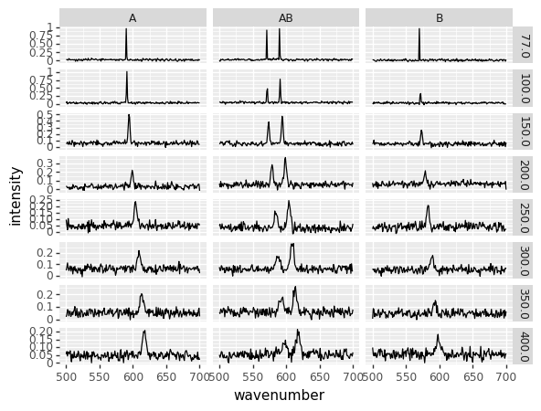

Wrangling 02 folder filenames
Reading many similar files from a folder and combining the results
import numpy as np
import pandas as pd
from matplotlib import pyplot
import matplotlib.pyplot as plt
First we try to read one file to make sure we're using the correct parameters:
test = pd.read_csv('filenames/Labram_laser514nm_1mW_30sx4_800nmgrating_T-200K_sample-B.txt', delim_whitespace=True, names=['wavenumber','intensity'])
test
| wavenumber | intensity | |
|---|---|---|
| 0 | 500 | 0.074992 |
| 1 | 501 | 0.028344 |
| 2 | 502 | 0.051664 |
| 3 | 503 | 0.060592 |
| 4 | 504 | 0.046647 |
| ... | ... | ... |
| 196 | 696 | 0.069203 |
| 197 | 697 | 0.071076 |
| 198 | 698 | 0.066464 |
| 199 | 699 | 0.092171 |
| 200 | 700 | -0.001873 |
201 rows × 2 columns
This seems reasonable, but now we'd like to extract parameters from the filename.
import re
def read_file(f) :
d = pd.read_csv(f, delim_whitespace=True, names=['wavenumber','intensity'])
info = f.split('_')
d['sample'] = re.sub('sample-|.txt','', info[6])
d['temperature'] = float(re.sub('T-|K','', info[5]))
return(d)
read_file('filenames/Labram_laser514nm_1mW_30sx4_800nmgrating_T-200K_sample-B.txt')
| wavenumber | intensity | sample | temperature | |
|---|---|---|---|---|
| 0 | 500 | 0.074992 | B | 200.0 |
| 1 | 501 | 0.028344 | B | 200.0 |
| 2 | 502 | 0.051664 | B | 200.0 |
| 3 | 503 | 0.060592 | B | 200.0 |
| 4 | 504 | 0.046647 | B | 200.0 |
| ... | ... | ... | ... | ... |
| 196 | 696 | 0.069203 | B | 200.0 |
| 197 | 697 | 0.071076 | B | 200.0 |
| 198 | 698 | 0.066464 | B | 200.0 |
| 199 | 699 | 0.092171 | B | 200.0 |
| 200 | 700 | -0.001873 | B | 200.0 |
201 rows × 4 columns
We can now grab all the filenames, and read them in:
import glob
import os
path = r'filenames'
txt_files = glob.glob(os.path.join(path , "*.txt"))
n = len(txt_files)
txt_files
d = pd.concat((read_file(f) for f in txt_files))
d
| wavenumber | intensity | sample | temperature | |
|---|---|---|---|---|
| 0 | 500 | 0.074992 | B | 200.0 |
| 1 | 501 | 0.028344 | B | 200.0 |
| 2 | 502 | 0.051664 | B | 200.0 |
| 3 | 503 | 0.060592 | B | 200.0 |
| 4 | 504 | 0.046647 | B | 200.0 |
| ... | ... | ... | ... | ... |
| 196 | 696 | 0.094646 | A | 150.0 |
| 197 | 697 | 0.087045 | A | 150.0 |
| 198 | 698 | 0.042058 | A | 150.0 |
| 199 | 699 | 0.038669 | A | 150.0 |
| 200 | 700 | 0.040565 | A | 150.0 |
4824 rows × 4 columns
We now have access to the whole set of variables corresponding to each data point:
from plotnine import *
(ggplot(d) +
geom_line(aes(x = 'wavenumber',
y = 'intensity')) +
facet_grid('temperature ~ sample', scales='free'))

<ggplot: (8789659312442)>
If needed, we can also reshape the dataset to 'wide' format,
w = d.pivot(index='wavenumber', columns=['temperature','sample'], values='intensity')
w
| temperature | 200.0 | 350.0 | 300.0 | 77.0 | 200.0 | 350.0 | 300.0 | 250.0 | 150.0 | 300.0 | ... | 200.0 | 400.0 | 250.0 | 100.0 | 350.0 | 400.0 | 150.0 | |||
|---|---|---|---|---|---|---|---|---|---|---|---|---|---|---|---|---|---|---|---|---|---|
| sample | B | B | AB | AB | A | A | B | B | AB | A | ... | AB | B | AB | B | A | AB | AB | AB | B | A |
| wavenumber | |||||||||||||||||||||
| 500 | 0.074992 | 0.004323 | 0.076536 | 0.013187 | 0.040021 | 0.019496 | 0.061139 | 0.024770 | 0.044493 | 0.047502 | ... | 0.065927 | 0.097784 | 0.048911 | 0.030249 | 0.034631 | 0.053777 | 0.053818 | 0.050812 | 0.045007 | 0.053432 |
| 501 | 0.028344 | 0.085461 | 0.046044 | -0.018791 | 0.032908 | 0.038194 | 0.051306 | 0.044119 | 0.052452 | 0.075359 | ... | 0.030383 | 0.053423 | 0.060435 | 0.005080 | 0.072406 | 0.064198 | 0.046188 | 0.034646 | 0.062872 | 0.052081 |
| 502 | 0.051664 | 0.077181 | 0.047811 | 0.040806 | 0.018934 | 0.077511 | 0.058560 | 0.027171 | 0.080658 | 0.112588 | ... | 0.093500 | 0.044374 | 0.024800 | 0.065015 | 0.002483 | 0.038562 | 0.081160 | 0.051756 | 0.104609 | 0.075111 |
| 503 | 0.060592 | 0.020926 | 0.088789 | 0.025998 | 0.020978 | 0.072047 | 0.035060 | 0.028181 | 0.059616 | 0.067806 | ... | 0.029277 | 0.064850 | 0.029291 | 0.015257 | 0.029402 | 0.044708 | 0.071798 | 0.071617 | 0.036044 | 0.042554 |
| 504 | 0.046647 | 0.046893 | 0.078558 | 0.028949 | 0.026733 | 0.027818 | 0.058260 | 0.015008 | 0.079030 | 0.045999 | ... | 0.068539 | 0.045043 | 0.064404 | 0.045351 | 0.029537 | 0.031399 | 0.052140 | 0.068621 | 0.057326 | 0.041804 |
| ... | ... | ... | ... | ... | ... | ... | ... | ... | ... | ... | ... | ... | ... | ... | ... | ... | ... | ... | ... | ... | ... |
| 696 | 0.069203 | 0.068946 | 0.100046 | 0.026807 | 0.038232 | 0.051920 | 0.056711 | 0.050955 | 0.038063 | 0.083492 | ... | 0.053672 | 0.056958 | 0.034406 | 0.002294 | 0.045724 | 0.064356 | 0.028167 | 0.048360 | 0.018886 | 0.094646 |
| 697 | 0.071076 | 0.009869 | 0.022073 | 0.003969 | 0.047044 | 0.027709 | 0.031566 | 0.007096 | 0.033194 | 0.081829 | ... | 0.054311 | 0.061701 | 0.006184 | 0.023873 | 0.047459 | 0.067253 | 0.042348 | 0.056965 | 0.078957 | 0.087045 |
| 698 | 0.066464 | 0.073517 | 0.105147 | 0.053418 | 0.060559 | 0.066897 | 0.055108 | 0.017699 | 0.051050 | 0.044317 | ... | 0.056145 | 0.029431 | 0.024783 | -0.003111 | 0.040905 | 0.058880 | 0.042994 | 0.052892 | 0.070674 | 0.042058 |
| 699 | 0.092171 | 0.026258 | 0.043518 | 0.047509 | 0.061322 | 0.088515 | 0.068128 | 0.023275 | 0.073509 | 0.058521 | ... | 0.033373 | 0.050172 | 0.035225 | 0.004628 | 0.034977 | 0.058225 | 0.045544 | 0.042894 | 0.003739 | 0.038669 |
| 700 | -0.001873 | 0.063085 | 0.040245 | 0.034734 | -0.015264 | 0.023307 | 0.061532 | 0.020031 | 0.036904 | 0.023002 | ... | 0.080003 | 0.060158 | 0.064786 | 0.007770 | 0.039950 | 0.063928 | 0.078361 | 0.066788 | 0.067909 | 0.040565 |
201 rows × 24 columns
Incidentally, the reverse operation can be done with melt, and would look like:
var_list=list(w.columns)
l = pd.melt(w, value_vars=var_list,value_name='I', ignore_index=False)
l = l.reset_index(level=['wavenumber']) # trick to convert the confusing (to me) multiindex into a standard column
l
| wavenumber | temperature | sample | I | |
|---|---|---|---|---|
| 0 | 500 | 200.0 | B | 0.074992 |
| 1 | 501 | 200.0 | B | 0.028344 |
| 2 | 502 | 200.0 | B | 0.051664 |
| 3 | 503 | 200.0 | B | 0.060592 |
| 4 | 504 | 200.0 | B | 0.046647 |
| ... | ... | ... | ... | ... |
| 4819 | 696 | 150.0 | A | 0.094646 |
| 4820 | 697 | 150.0 | A | 0.087045 |
| 4821 | 698 | 150.0 | A | 0.042058 |
| 4822 | 699 | 150.0 | A | 0.038669 |
| 4823 | 700 | 150.0 | A | 0.040565 |
4824 rows × 4 columns
Download this page as a Jupyter notebook or as a standalone Python script.